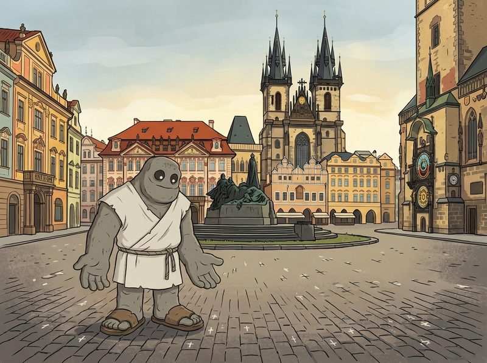
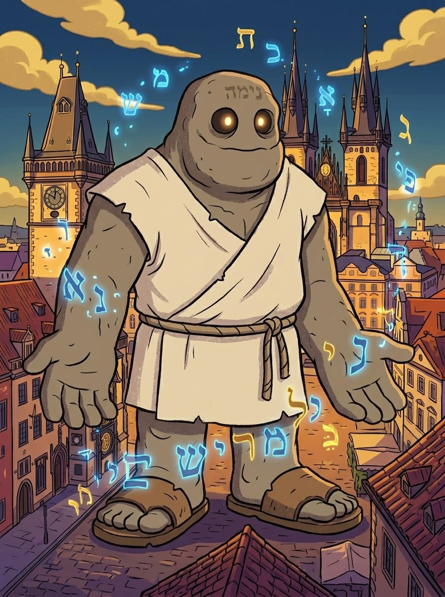

Most "Prague with kids" lists hand you twenty attractions scattered across the city and leave the walking to you. The problem with that in practice is not the sights — it is the gaps between them, where a seven-year-old runs out of patience. What follows is a single unbroken walk. Every stop is within a few minutes of the last one, it moves in one direction, and it ends on the Old Town Square where you can sit down and have an ice cream.
At each stop there is something specific to find — a carved bird, a hidden mark in the cobblestones, a golden animal. That is the difference between a child looking at a building and a child looking for something.
The route map
All seven stops on one Google map. Open it on your phone as you walk.
The seven stops
Charles Bridge
Start on the bridge itself — no cars, no traffic, statues the whole way across. Cross it slowly; this is the one stretch where nobody is in a hurry.
Find: the statue of St. John of Nepomuk, and the bronze relief on the plinth below it. Ask your child what is happening in the picture.
Old Town Bridge Tower
The gateway at the Old Town end of the bridge, built by Petr Parléř — the same architect as St. Vitus Cathedral. Three large stone figures sit on the facade, watching the bridge.
Find: a small kingfisher carved into each side of the archway. It was the secret personal symbol of King Wenceslas IV. Both sides have one.
The Clementinum
An enormous complex of buildings, most of which you can walk straight past without noticing. Look up at the Astronomical Tower: the lead statue on top weighs 600 kilograms.
Find: what the giant on the tower is holding up over the city. You will need to get some distance from the building to see it properly.
The Old-New Synagogue
The oldest continuously used synagogue in Europe, built around 1270 — and, according to the legend, the place where Rabbi Loew shaped the Golem out of clay from the banks of the Vltava. If your child likes one story from Prague, it is this one.
Find: the distinctive brick gables above the roofline. Their shape is unlike any other roof on the walk.
Old Town Square
The centre of the city for a thousand years. Look down as well as up: white crosses are set into the cobblestones, marking the 1621 execution of the Czech rebels.
Find: walk all the way around the Jan Hus monument. Smaller bronze figures are modelled around the big one — among them, a mother with a small child.
The Astronomical Clock (Orloj)
On the edge of the same square. Time your walk so you arrive just before the hour — the apostles parade past the two little windows, and a golden animal on top calls out at the end. The crowd will tell you when it is about to happen.
Find: count the apostles as they go past. (There are fewer than most people guess.)
Church of Our Lady before Týn
The two Gothic towers behind the square. Tycho Brahe — the Danish astronomer with the famously ruined nose, who worked at the court of Rudolf II — is buried inside, at the foot of the pillar by the main altar.
Find: the two towers are not the same height. Which one is taller, the northern or the southern?

Practical notes
Direction matters. The route runs one way — bridge first, square last. Do not reverse it: the Old Town Square is where the food, the toilets and the sitting down are, and you want that at the end, not the middle.
The Orloj strikes on the hour. It is the one fixed appointment on the walk. Everything else you can take at your own speed.
Two hours is realistic if you stop properly at each landmark. It is a kilometre and a half of walking, but almost none of it in a straight line.
The printable version

Prague Scavenger Hunt
The same seven stops, turned into a game the children run themselves. The Golem of Prague is losing the magic word that keeps him alive, and they collect it back one letter at a time.
- 7 stations, each with a fun fact and a multiple-choice riddle
- Every correct answer reveals a letter — seven letters spell the magic word
- A parent's answer sheet at the back
- Fully offline: no app, just print it
- English, German and Hungarian — all three included
Every fact in the hunt is checked against a source. The children read, look, argue about the answer, and write down a letter — and by the seventh stop they have walked the Old Town without once asking how much further it is.